Partenaires et bailleurs APSUD (36)
Planche de contrôle générée depuis data/apsud/partenaires.json.
UK aid (logo « UKaid – from the British people »)bailleur · gouvernement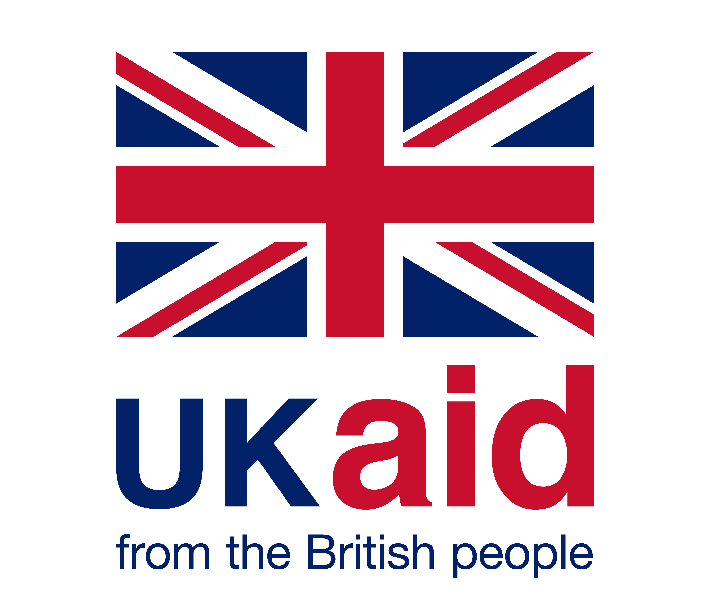
site actuel United Nations CERF – Central Emergency Response Fundbailleur · agence ONU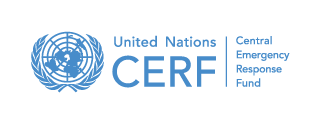
site actuel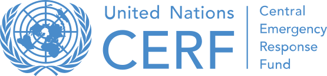
HD officiel AU SECOURS – Développement et Humanitairepartenaire · partenaire de mise en oeuvre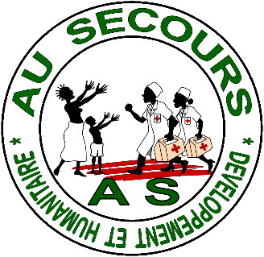
site actuel Bêkou – EU Trust Fund for the Central African Republicbailleur · bailleur de fonds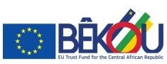
site actuel FH RCA – Fonds Humanitaire République centrafricainebailleur · bailleur de fonds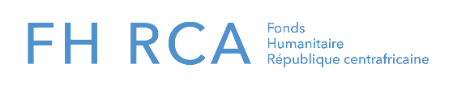
site actuel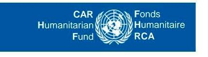
archives Gavi – L'Alliance du Vaccinbailleur · bailleur de fonds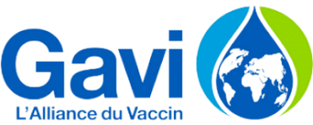
site actuel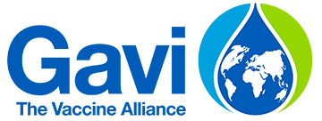
HD officiel MINUSCApartenaire · agence ONU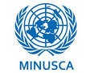
site actuel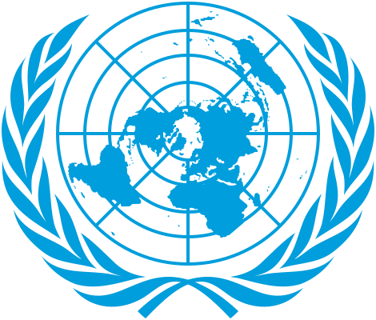
HD officiel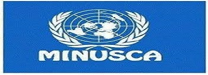
archives ONU Femmespartenaire · agence ONU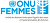
site actuel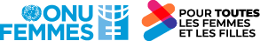
HD officiel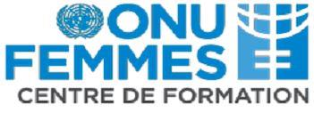
archives Oxfampartenaire · ONG internationalesite actuelHD officiel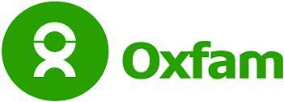
archives PNUDpartenaire · agence ONU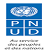
site actuel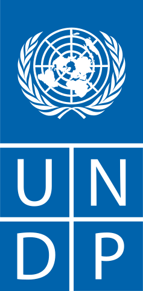
HD officiel Sidabailleur · gouvernement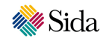
site actuel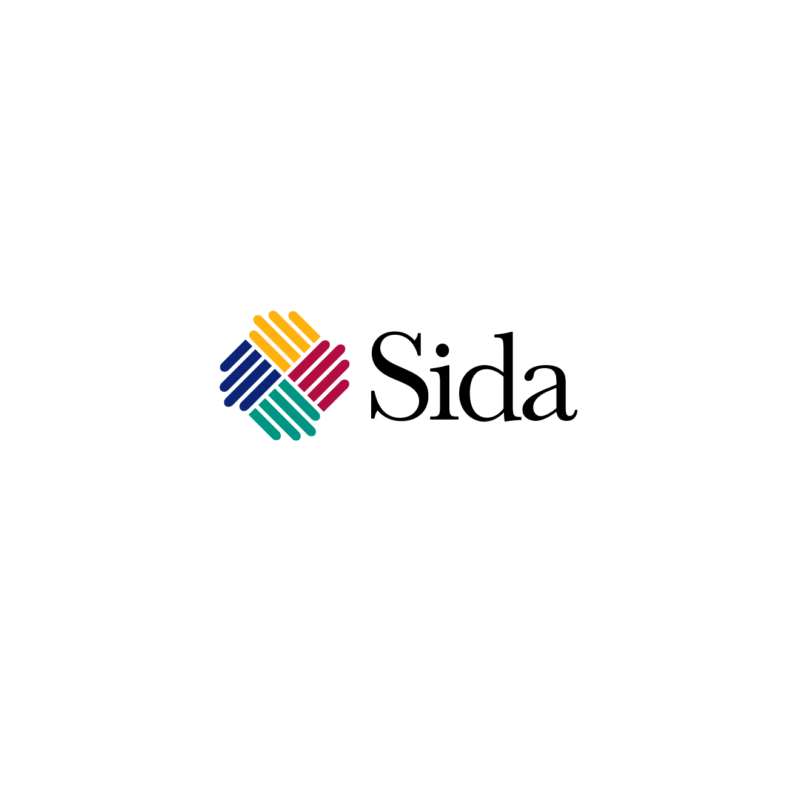
HD officiel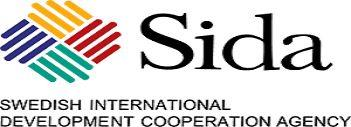
archives unicef – pour chaque enfantpartenaire · agence ONU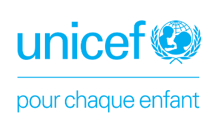
site actuel HD officiel
HD officiel UNOPSpartenaire · agence ONU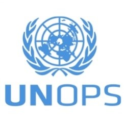
site actuel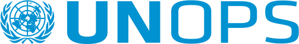
HD officiel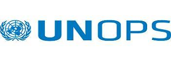
archives USAID – From the American Peoplebailleur · gouvernement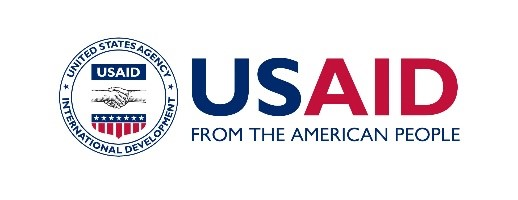
site actuel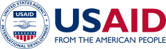
HD officiel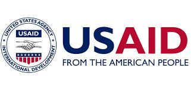
archives Union Européenne (UE)bailleur · bailleur de fonds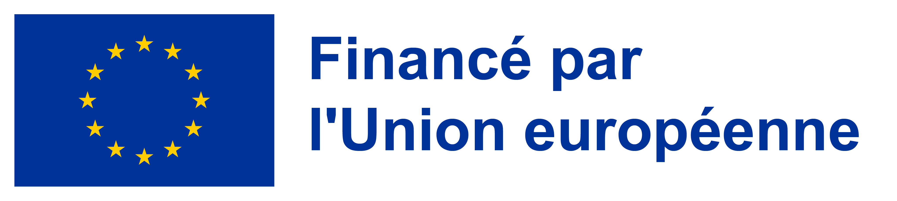
HD officiel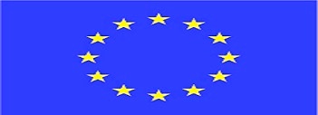
archives BMZbailleur · gouvernement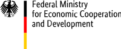
HD officiel ONG International Deutsche Welthungerhilfe e.V. (WHH)partenaire · ONG internationale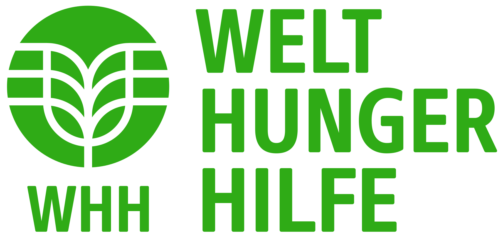
HD officiel Japonbailleur · gouvernement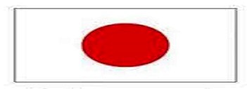
archives LNPDDpartenaire · partenaire de mise en oeuvreaucun logo disponible
OFAHRDpartenaire · partenaire de mise en oeuvreaucun logo disponible
ACTEDpartenaire · ONG internationale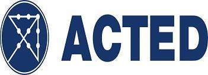
archives ACFpartenaire · ONG internationale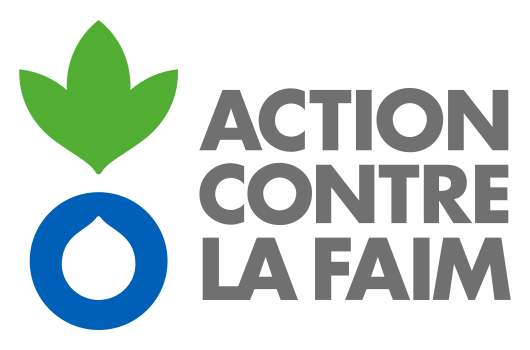
HD officiel NRCpartenaire · ONG internationaleaucun logo disponible
DRCpartenaire · ONG internationaleaucun logo disponible
OIMpartenaire · agence ONUaucun logo disponible
FAOpartenaire · agence ONU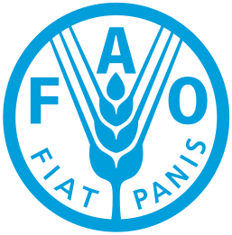
HD officiel UNFPApartenaire · agence ONU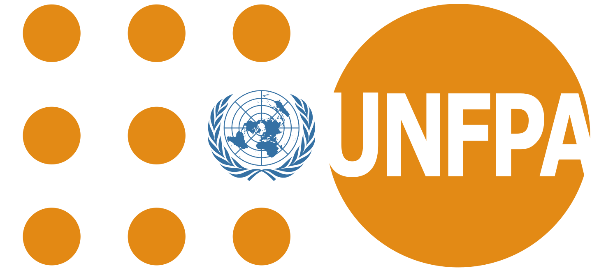
HD officiel PBFbailleur · bailleur de fondsaucun logo disponible
ECHObailleur · bailleur de fondsaucun logo disponible
PAMbailleur · agence ONU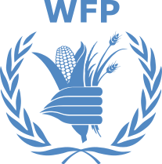
HD officiel AFDbailleur · bailleur de fonds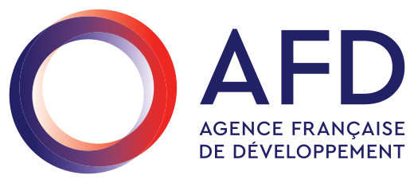
HD officiel Irish Aidbailleur · gouvernementaucun logo disponible
DFATD / Affaires mondiales Canadabailleur · gouvernementaucun logo disponible
Inditexbailleur · entrepriseaucun logo disponible
AECIDbailleur · gouvernementaucun logo disponible
UNTFHSbailleur · bailleur de fondsaucun logo disponible